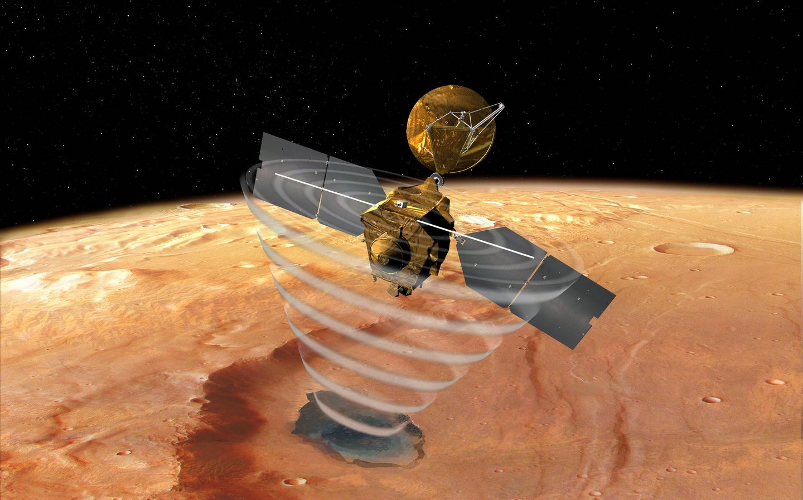

Mars Link is a space link that needs to be accessed to visit Mars from any other planet.
We take people to Mars, and then we prepare the capability to communicate.
But a constellation around Mars won’t be enough.
Very high levels of Mars-to-Mars communication capacity to feed TBs of daily local data to local data reduction reduction computers is needed since communications to Earth is limited. MarsLink Ai maybe able to drive rovers quickly without human intervention.